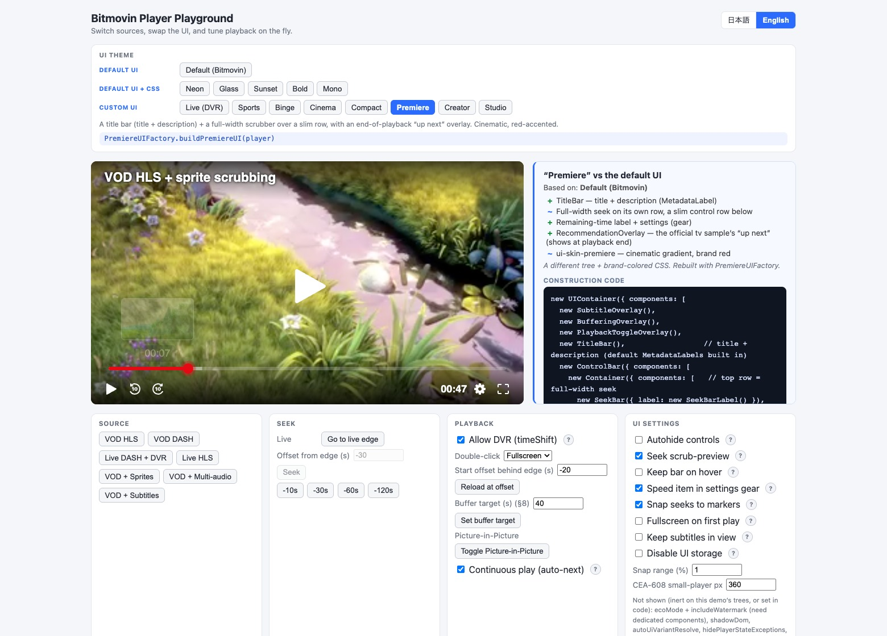

Bitmovin Player samples
Switch themes, adjust player and source settings, and inspect the code used to build each interface.
A Bitmovin Player playground for the Web, with examples for iOS, Android, React Native, and Vega OS. Start with the existing player controls and see how a setting changes playback.

Web features
The interface and its code stay together, so experiments are easy to follow.
- Configure playback
- Change player settings, source settings, and advanced tweaks in the onscreen panels. Each setting indicates whether it applies immediately, reloads the source, or recreates the player.
- Explore 14 interfaces
- Compare the standard interface, styles made with Cascading Style Sheets (CSS), and custom component layouts. The construction panel shows the code for the selected theme.
- Inspect real playback
- Try live rewind, audio selection, subtitles, and thumbnail previews. Player state, events, and local playback measurements help explain the result. The Pages version includes media for the feature examples.
Run the Web app
Use Node.js 24.19.0 and pnpm 10.33.0, then run these commands.
Open the printed URL with the hostname localhost to run
the Web Player without a key. Public Player and Analytics licenses must
allow kazuhide.github.io; both client keys are delivered to the browser.
Other hosts and native apps also need an allowed license.
git clone https://github.com/kazuhide/player-lab.git
cd player-lab
pnpm install --frozen-lockfile
pnpm --filter @showcase/web devPlatform examples
Each example keeps its platform's player and toolchain. The platform guides describe supported formats, license setup, and verification limits.
Playback tests
The Pages build includes a 60-second Big Buck Bunny fixture as HLS and DASH, with two-second video segments.
Both audio tracks use the same soundtrack at different volumes; their language labels are test metadata. The Sintel subtitles test cue timing and are not a translation of Big Buck Bunny.
Browser-local playback measurements remain available. When configured, the Analytics collector sends playback data to Bitmovin. Account aggregation queries need a backend and are disabled on Pages. The test record distinguishes browser playback, native builds and runtime checks.